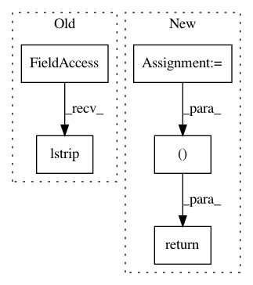

2b748e42725450bf20f184397f1918de7ac812ee,mlflow/utils/uri.py,,get_db_info_from_uri,#Any#,38
Before Change
parsed_uri = urllib.parse.urlparse(uri)
if parsed_uri.scheme == "databricks":
parsed_path = parsed_uri.path.lstrip("/") or None
parsed_profile = parsed_uri.netloc
return parsed_profile, parsed_path
return None, None
After Change
parsed_key_prefix = profile_tokens[1]
else:
// parse the content before the first colon as the profile.
parsed_key_prefix = ":".join(profile_tokens[1:])
validate_db_scope_prefix_info(parsed_scope, parsed_key_prefix)
return parsed_scope, parsed_key_prefix
return None, None
def get_databricks_profile_uri_from_artifact_uri(uri):
In pattern: SUPERPATTERN
Frequency: 3
Non-data size: 5
Instances
Project Name: mlflow/mlflow
Commit Name: 2b748e42725450bf20f184397f1918de7ac812ee
Time: 2020-08-07
Author: 52183359+ankitmathur-db@users.noreply.github.com
File Name: mlflow/utils/uri.py
Class Name:
Method Name: get_db_info_from_uri
Project Name: polyaxon/polyaxon
Commit Name: 8d4140e264a0a47d3d690a5adc6386c027e2f8e2
Time: 2019-07-13
Author: mouradmourafiq@gmail.com
File Name: polystores/stores/gcs_store.py
Class Name: GCSStore
Method Name: parse_gcs_url
Project Name: vatlab/SoS
Commit Name: 48c26c0eb5d972e965ff678a9014ca0004e6fa20
Time: 2016-12-03
Author: ben.bog@gmail.com
File Name: sos/jupyter/completer.py
Class Name: SoS_MagicsCompleter
Method Name: get_completions